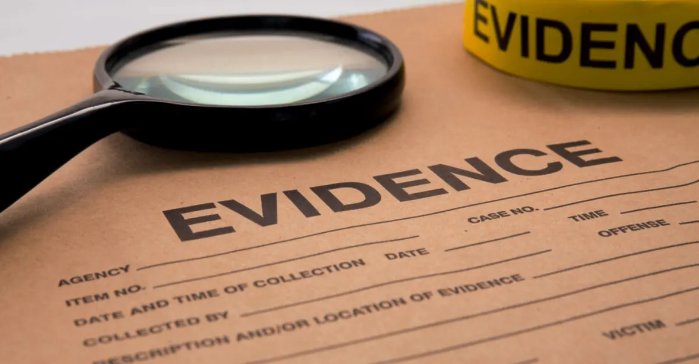

A historic social media addiction trial in California opens on Tuesday, with top industry executives scheduled to testify. For years, social media companies have fought allegations that their platforms hurt young people's mental health. They will have to defend against those claims in front of a jury in a court of law for the first time beginning Tuesday. incredible national security implications. Amodei, known for his grim warnings about the potential misuse of AI models, came out weeks after the Trump administration announced that Nvidia may continue selling its powerful H200 processors to China, with the
The carefully watched case in Los Angeles Superior Court is the first in a series of similar lawsuits that might call into question a legal doctrine employed by digital companies to avoid liability in the United States. The case's trial signals a significant shift in how the US judicial system treats technology companies, which face rising charges that their products cause addictive behaviors.

The trial in California Superior Court, Los Angeles County, may serve as a test case for thousands of other claims seeking damages for social media harms, potentially undermining Big Tech's long-standing legal defense. Her lawsuit is the first of dozens that are likely to go to trial this year, focusing on what the plaintiffs refer to as "social media addiction" among minors. KGM's lawsuit is one of several bellwethers in a broader multi-district litigation including over 1,500 personal injury claims alleging comparable harms as a result of TikTok, YouTube, Meta, and Snap.
Why This News Matters:
This trial is important because it makes social media companies do something they've never had to do before: tell a jury why they made the design choices they did. There have been a lot of studies, hearings, and news stories about how kids' mental health is affected by their addiction to social media, but not many of them have gone to court. If jurors decide that things like endless scrolling, algorithms, and notifications really hurt people, it could change a lot about how platforms are built, run, and held accountable.
Plaintiff and Core Allegations
The complainant, a 19-year-old woman known by the initials KGM, claims that the algorithms designed by the platforms led to her addiction to social media and had a harmful impact on her mental health. A 19-year-old named KGM and her mother, Karen Glenn, are suing TikTok, Meta, and Google's YouTube, claiming that the firms willfully built addictive features that affected her mental health and led to self-harm and suicidal ideation.
According to court records, the plaintiff, a 19-year-old woman from California named K.G.M., claims she grew addicted to the corporations' platforms at a young age due to its eye-catching appearance. KGM's complaint claims that the social media giants purposefully created their platforms to be addictive, while recognizing the risks to young people.
According to court filings, KGM, a California girl, began accessing social media when she was 10 years old, despite her mother's attempts to limit access to the platforms via third-party software. "Defendants design their products in a manner that enables children to evade parental consent," according to the complaint. According to the lawsuit, the "addictive design" of Instagram, TikTok, and Snapchat, as well as frequent notifications, caused her to use the sites compulsively, resulting in a decline in her mental health. "Defendants' knowing and deliberate product design, marketing, distribution, programming and operational decision and conduct caused serious emotional and mental harms to K.G.M. and her family," according to the complaint.
Defendants and Parties Involved
The defendants include Meta, which owns Instagram and Facebook, TikTok's owner ByteDance, and YouTube's parent Google. Meta Platforms, TikTok, and YouTube will face court this week on charges that their platforms are contributing to a juvenile mental health crisis. Snapchat settled with the lawsuit last week.
Snap CEO Evan Spiegel was also slated to testify because his company is a defendant in the dispute. On January 20, Snap agreed to settle K.G.M.'s case. Top executives from Meta, TikTok, and YouTube are likely to testify during the trial, which will take place in Los Angeles and span several weeks. One highly anticipated witness the jury will hear from is Meta CEO Mark Zuckerberg, who is scheduled to testify early in the trial.
Legal Framework and Section 230
The businesses have long contended that Section 230 of the Communications Decency Act, approved by Congress in 1996, exempts platforms from liability for third-party content. A federal statute that exempts networks like Instagram and TikTok from legal accountability for the content that their users post is one issue in the case.
Tech titans have also regularly used Section 230, a federal law that protects them from liability for anything posted by its users, as a defense against safety allegations. However, the issue in this scenario is design decisions concerning algorithms, notifications, and other features that influence how people use their apps. Last year, Los Angeles Superior Court Judge Carolyn Kuhl stated that jurors could evaluate if design characteristics employed by the corporations, such as continually scrolling feeds, have led to mental health damages rather than just content.
Evidence and Trial Proceedings
Jurors can expect to see a variety of evidence during the trial, including excerpts from internal company documents. "A lot of what these companies have been trying to shield from the public is likely going to be aired in court," Mary Graw Leary, an attorney, told reporters. Jury selection in the case begins on Tuesday. The judgment might have an impact on how more than 1,000 comparable personal injury complaints against Meta, Snapchat, TikTok, and YouTube are settled.

Matthew Bergman, KGM's attorney, told the BBC that this will be the first time a jury has held a social media corporation accountable at trial. According to Eric Goldman, a legal professor at Santa Clara University, losing these challenges in court could endanger the social media businesses' very existence. However, he stated that plaintiffs may find it difficult to prove that physical harm was caused by content providers. "The fact that the plaintiffs have been able to sell that idea has opened the door to a whole bunch of new legal questions that the law wasn't really designed to answer," he told reporters. "Tech executives are often not good under pressure," remarked Mary Anne Franks. "There is a tipping point when it comes to the harms of social media," Franks told reporters.
Company Defenses and Public Statements
The mentioned social media platforms have stated that the plaintiff's proof falls short of showing their liability for asserted injuries such as depression and eating disorders. The firms are anticipated to contend that any alleged harms were created by third-party users. In 2024, Zuckerberg told US lawmakers that "the existing body of scientific work has not shown any causal link between social media and young people having worse mental health outcomes".
Snap has previously stated that Snapchat is "designed differently from traditional social media." When asked for a comment, a Meta spokeswoman directed CNN to a website dedicated to the company's reaction to child mental health cases. YouTube representative José Castañeda stated to CNN that the charges in teenage mental health litigation are "simply not true." TikTok did not return a request for comment on this article.
Broader Scrutiny and Global Context
The trial comes as the firms face increased scrutiny from families, school districts, and prosecutors throughout the world. Last year, dozens of US states sued Meta, claiming the firm deceived the public about the perils of social media use and contributed to a juvenile mental health crisis.
Australia has adopted a social media ban for under-16s, and the UK hinted in January that it may follow suit. In 2024, then-US Surgeon General Vivek Murthy urged Congress to implement a tobacco-style warning label on social media services. Pew Research Center research published last year found that nearly half of US teenagers feel social media has "mostly negative" effects on persons their age. Despite these measures, many parents and advocates believe social media platforms are still failing to protect young users. A jury will soon have the opportunity to decide whether they agree.